Intersex Rights
Ending harmful medical practices and discrimination, and building a Kenya where intersex people live with dignity and full recognition under the law.
For over two decades, Dr. Dennis Wamalwa has stood with Kenya's most vulnerable — turning the promise of human dignity into action, policy, and lasting change.
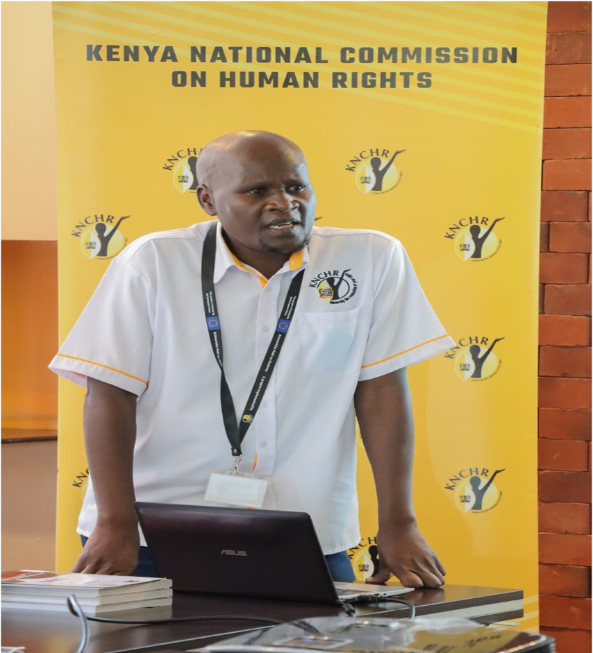
Not slogans — a documented career of advocacy, scholarship, and institutional reform across Kenya and beyond.
Every person deserves to live freely, safely, and with respect — no matter their status. These are the causes at the heart of the Commissioner's work.
Ending harmful medical practices and discrimination, and building a Kenya where intersex people live with dignity and full recognition under the law.
Championing the well-being, education, and protection of every child — because a safe, healthy childhood is a right, not a privilege.
Celebrating diversity while confronting prejudice — advancing safety, inclusion, and equal opportunity for persons with albinism.
Confronting ageism and isolation so that every person can age with grace, healthcare, and the respect their wisdom has earned.
Breaking barriers to education, employment, and healthcare — advancing the full participation and empowerment of persons with disabilities.
See how these commitments become policy, training, and real protection on the ground.
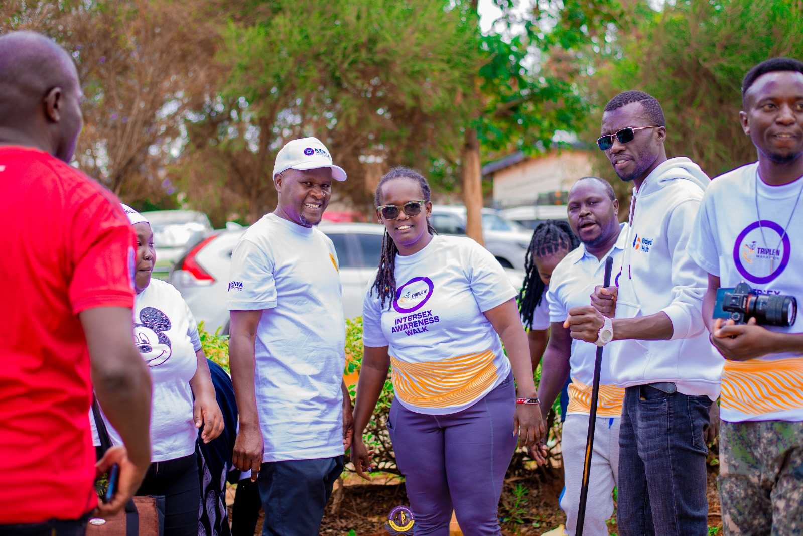
Dr. Dennis Wamalwa, PhD, serves as a Commissioner with the Kenya National Commission on Human Rights (KNCHR) and as Board Member and Vice-Chairperson of the Intersex Persons Society of Kenya. He is a governance expert, community organiser, gender specialist, and human rights defender.
With more than 20 years as a lecturer, trainer, researcher, and mental-health consultant across international, national, and grassroots institutions, his advocacy is grounded in real communities — from correctional facilities to refugee camps to county halls.
“ As a commissioner for human rights, I stand to speak on the urgent need to protect and promote the rights of intersex individuals in Kenya. Our society must acknowledge that they exist and are entitled to the same rights and protections as all other citizens. Dr. Dennis Wamalwa, PhDCommissioner, KNCHR · on the rights of intersex persons
Dispatches from the frontline of human-rights work across Kenya and Africa.
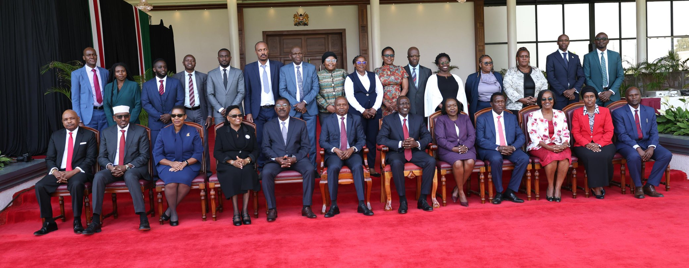
KNCHR's victim-centred framework promises accountability and dignity for those who have suffered rights violations.
Read story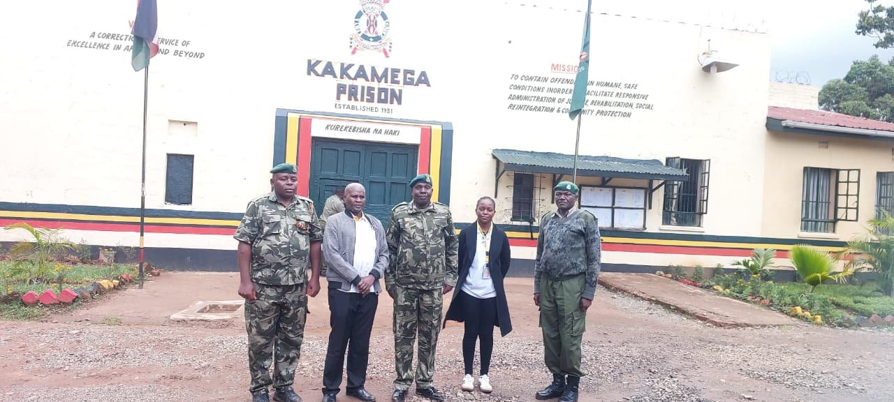
In Kakamega, the Commissioner joined stakeholders to strengthen humane, rehabilitation-centred mental-health support in prisons.
Read story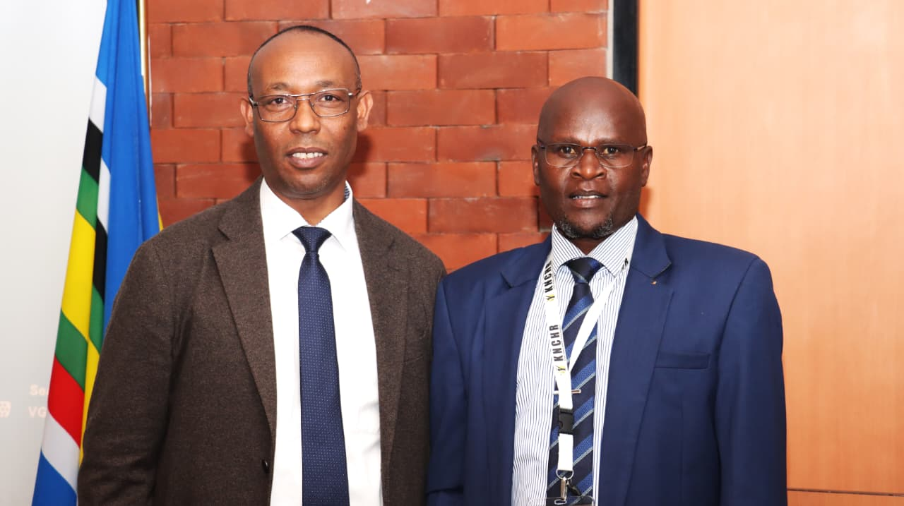
A four-day knowledge exchange strengthening institutional capacity and cooperation among Africa's human-rights institutions.
Read story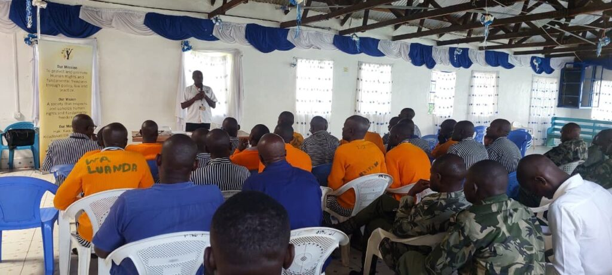
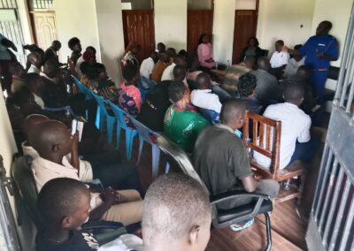
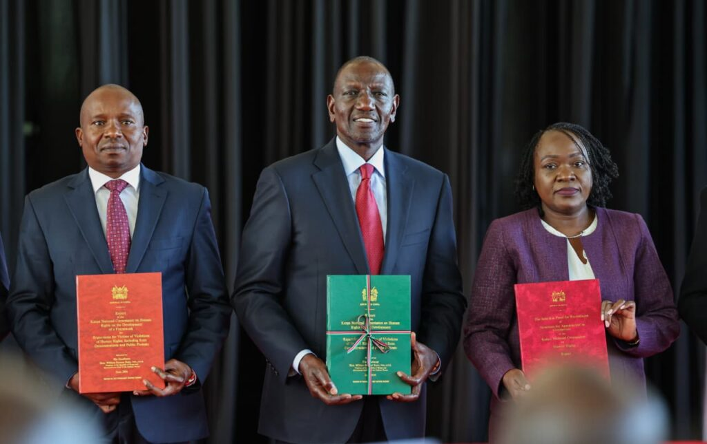
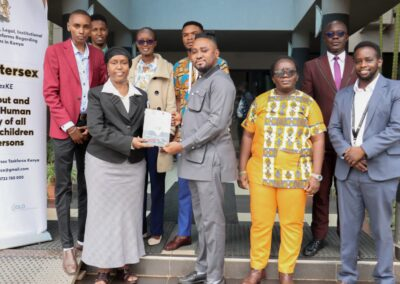
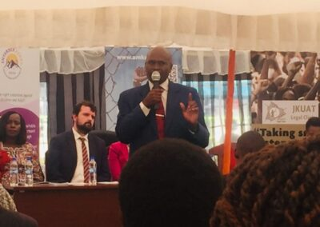
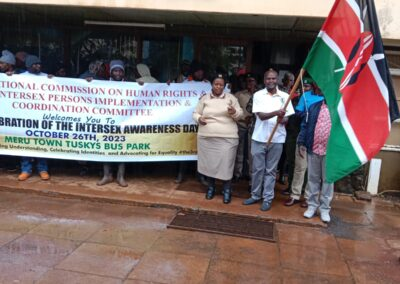
The fight for equal rights belongs to all of us. Add your voice, your time, or your support — and help ensure this record of service continues for the communities that need it most.
Volunteer your skills, partner on an initiative, or simply learn more. There are many ways to be part of the movement for equal rights.